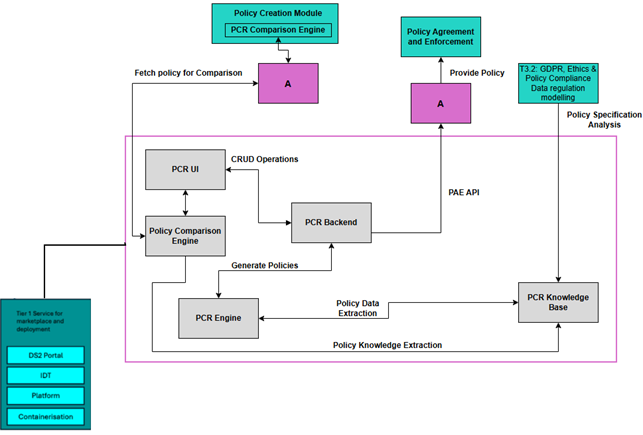

PCR - Policy Creation
Powered by

| Project Links |
|---|
| Software GitHub Repository https://github.com/ds2-eu/pcr.git |
| Progress GitHub Project https://github.com/ds2-eu/PCR/issues |
General Description
The PCR module provides a user-friendly solution for Data Space authorities to create, manage, and compare data access policies across or within Dataspaces. Built around the ODRL (Open Digital Rights Language) standard, the tool simplifies policy creation using intuitive UI elements and enables text-based comparison of policies. It generates compliant JSON-formatted policy files that can be used across DS2 modules, including for integration with the PAE (Policy Agreement and Enforcement) module.
Architecture
The figure below represents the module fit into the DS-DS environment.

The figure below represents the actors, internal structure, primary sub-components, primary DS2 module interfaces, and primary other interfaces of the module.

Component Definition
This module has the following subcomponents and other functions: - PCR UI: A graphical user interface for Data Space authorities to create, view, and edit policies. It includes intuitive drop-downs for defining policy parameters, allowing non-experts to create ODRL-compliant policies without deep technical knowledge.
-
PCR Backend: A FastAPI service that exposes the PCR API to the UI and other DS2 components. It stores negotiation/workflow state in MongoDB, while persisting JSON-LD policy versions in the configured DLM repositories (global/local) and handling cross-deployment discovery/projections.
-
Policy Builder / Vocabulary Catalog: Imports ODRL/DPV/DS2 vocabulary and curated builder artifacts into MongoDB. This catalog is what powers the UI wizards/forms (schema/templates/compatibility metadata).
-
Negotiation & Comparison: Implements negotiation sessions, revision chains, and reconciliation flows. It also supports policy discovery/search and preview routing used for compatibility checking between dataspaces.
-
PCR Knowledge Base: A repository of structured rules, policy templates, and attributes needed during the policy creation and comparison processes.
Screenshots
This section is currently unavailable as the module is in the early stages of development.
Commercial Information
| Organisation (s) | License Nature | License |
|---|---|---|
| ATC | Open Source | Apache 2.0 |
Top Features
- User-Friendly Policy Creation: Allows dataspace administrators to generate compliant ODRL policies using guided, non-technical UI elements.
- ODRL-Compliant JSON Output: Automatically exports policies in ODRL-based JSON format for use in DS2 components.
- Manual Policy Comparison: Facilitates the textual comparison of policies between dataspaces, supporting negotiation and alignment.
- Integration with DS2 PAE: Policies can be exported to the Policy Agreement and Enforcement module via API.
- Cross-Dataspace Functionality: Enables viewing and comparing policies from other dataspaces through supported APIs.
- Modular Architecture: Easily extendable for future features like policy versioning or advanced semantic comparisons.
- Support for Standard and Custom Attributes: Offers predefined fields for common policy elements with the flexibility to define new ones.
How To Install
Requirements
Following are the Hardware Requirements for PCR - CPU: 2 vCPUs
-
RAM: 8 GB
-
Storage: 10 GB SSD (expandable depending on ledger size and log retention)
-
OS: Ubuntu 22.04 LTS or equivalent
Software
- PCR Backend: Python 3.10+ (FastAPI-based), MongoDB 8.0+ for state, DLM repository for JSON-LD policy versions, Keycloak JWT (for authentication)
- PCR UI: Node.js 18+ with
pnpm, delivered as static assets served by NGINX - Additional Tools: Git, Docker and Docker Compose (recommended)
For runtime configuration, copy the repository .env.example to .env and review required MongoDB/DLM/Keycloak and UI proxy variables.
Summary of installation steps
- Clone the repository
- Configure environment variables:
cp .env.example .env - Start the full stack with Docker Compose:
docker compose up --build -d - (Recommended) Seed the policy builder vocabulary catalog inside the backend container
Notes for Docker Compose users
- Services: mongo-global, seed-global, pcr-global (API on port 8010), pcr-ui-global (UI on port 8080).
- Global env files: ilab-ds2-pcr-be/.env.api.global_readonly_1.minimal and ilab-ds2-pcr-ui/.env.ui.global_readonly_1 (PCR_DEPLOYMENT_MODE=global).
- pcr-ui-global proxies /api/* to http://pcr-global:8010 via NGINX_API_PROXY_PASS (override in .env if needed).
- Vocabulary seeding runs once via seed-global before the API starts; re-run manually with the command below if needed.
Database Seeding
After initial installation, you should seed the policy builder vocabulary/catalog (ODRL/DPV/DS2 vocabulary + UI-ready templates/compatibility metadata). This prepares the UI to generate valid, ODRL-compliant policy drafts.
What Gets Seeded
The seeding process runs in a specific order to ensure data dependencies are met:
- Vocabularies (DPV concepts and terms): Data Privacy Vocabulary concepts and terminology
- ODRL entities: ODRL actions, operators, duties, and constraints - core building blocks for policies
- DS2 builder catalog curated values: UI-ready curated values/overlays for the
ds2-coreprofile - Policy templates: Template policies used by the UI builder and preview/compatibility checks
- Import locks / indexes: Idempotent import support and required MongoDB indexes
Running the Seeding Script
Option 1: Using Docker Compose (Recommended)
docker compose exec pcr-global python -m app.jobs.seed_policy_vocab --profile ds2-core --mode upsert
Option 2: Manual Installation
The seeding script will: - Create/upgrade the policy vocabulary and builder catalog collections in MongoDB - Import vocabulary terms and relations from packaged DPV/ODRL/DS2 sources - Upsert curated builder values and policy templates for the requested profile - Provide progress logs for each import step
Note: Seeding is optional, but strongly recommended for first-time UI usage. After seeding, you can create/publish policy drafts via the UI or API.
For additional CLI options, run python -m app.jobs.seed_policy_vocab --help.
How To Use
Using the PCR UI
The PCR UI provides an intuitive interface for: - Creating and managing ODRL-compliant policies - Registering parties (organizations and individuals) - Managing assets (datasets and resources) - Comparing policies between dataspaces
When using the default PCR/docker-compose.yml, access the UI at http://localhost:8080 and the API at http://localhost:8010 (or your deployed URLs). The UI reverse-proxies API calls under /api/* to the PCR backend (configured via NGINX_API_PROXY_PASS).
Using the API
Use the interactive API documentation (Swagger UI) at http://localhost:8010/docs (update the port if configured differently). Typical use:
- Authenticate using Keycloak-issued JWTs (Bearer).
- Create/update policy drafts and lifecycle via /policies/*.
- Discover/search across dataspaces via /policies/search and /policies/discover.
- Start/advance negotiation sessions via /negotiations/*.
- Read runtime flags/config via /runtime/config.
Other Information
API Endpoints
For a complete list of available API endpoints, use Swagger/OpenAPI at /docs and openapi.json.
Standards Compliance
PCR Engine is built on W3C standards: - ODRL 2.2: W3C Recommendation for expressing permissions and restrictions - DPV 2.2: W3C Community Group specification for data privacy - RDF/SPARQL: Core semantic web technologies - JSON-LD 1.1: JSON-based RDF serialization
These standards are reflected in the generated ODRL/DPV JSON-LD and policy templates.
Troubleshooting
- UI loads but API fails: verify
NGINX_API_PROXY_PASSand that the backend is reachable from the UI container/pod. - 502/503 from UI
/api/*: check upstream host/port and TLS scheme (httpvshttps). - Backend health is degraded: validate
MONGODB_URL/MONGODB_DATABASEconnectivity (and credentials, if enabled). - Policy builder errors: run/confirm the seed job (
python -m app.jobs.seed_policy_vocab --profile ds2-core --mode upsert). - Authentication errors: confirm JWT issuer/audience or JWKS configuration (or trusted gateway mode) in the backend environment.
OpenAPI Specification
The PCR Engine provides interactive API documentation automatically generated from the FastAPI application:
- Swagger UI: http://localhost:8010/docs
- ReDoc: http://localhost:8010/redoc
- OpenAPI JSON: http://localhost:8010/openapi.json
If you changed the backend port in Docker Compose, update localhost:8010 accordingly.
Additional Links
Documentation Resources
- PCR UI README: ../ilab-ds2-pcr-ui/README.md - UI deployment and required environment variables
- Backend seed CLI: ../ilab-ds2-pcr-be/app/jobs/seed_policy_vocab.py - Vocabulary/catalog bootstrap
- API Documentation: http://localhost:8010/docs (Swagger UI)
- GitHub Repository: https://github.com/ds2-eu/pcr.git
- GitHub Issues: https://github.com/ds2-eu/PCR/issues
Standards and Specifications
For complete references to standards and technology documentation, see: - ODRL 2.2: https://www.w3.org/TR/odrl-model/ - DPV 2.2: https://www.w3.org/TR/dpv/ - JSON-LD 1.1: https://www.w3.org/TR/json-ld11/ - RDF/SPARQL: https://www.w3.org/RDF/ and https://www.w3.org/TR/sparql11-overview/